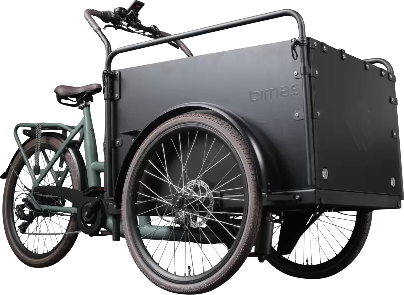
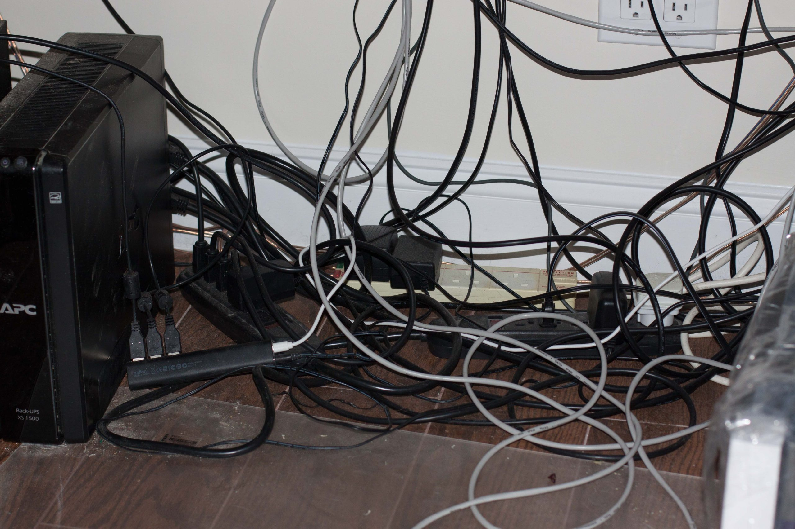

Hello, I’m Albin Milton
I build clean, accessible web interfaces and love learning new things.
I build clean, accessible web interfaces and love learning new things.
I’m an aspiring full-stack developer with a solid foundation in front-end technologies like HTML and CSS, and I’m currently expanding my knowledge of JavaScript to bring more interactivity and functionality into my projects. My journey into web development started with a curiosity about how websites are built and has grown into a full commitment to mastering both the front-end and back-end of web applications.
What drives me is the balance between creativity and logic that coding offers. I enjoy designing layouts that look clean and responsive while also focusing on how everything works behind the scenes. Every project I take on is an opportunity to practice problem-solving, improve my skills, and push myself a little further than before.
My goal is to become a well-rounded developer who can build applications that not only work seamlessly but also create a great user experience. Along the way, I’m diving into new technologies, experimenting with side projects, and constantly challenging myself to grow.
Outside of coding, I like exploring the latest trends in tech, learning from other developers, and staying curious about how digital tools shape the way we live and work. This continuous learning mindset keeps me motivated and helps me bring fresh ideas into every project I work on.
Here are some of the projects I've worked on:
Project 1: Placeholder
Project 2: Placeholder
Project 3: PLaceholder